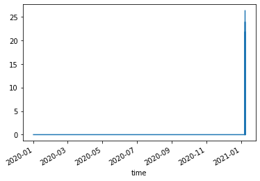
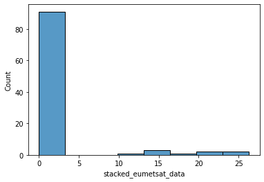

Extracting Time-Series for Analysis¶
from satip import io
import shapely
import geopandas as gpd
import seaborn as sns
import matplotlib.pyplot as plt
import cartopy.crs as ccrs
User Inputs¶
We have to specify the bucket where the data is located
zarr_bucket = 'solar-pv-nowcasting-data/satellite/EUMETSAT/SEVIRI_RSS/full_extent_TM_int16'
Loading Data¶
Then the satip wrapper for loading data will generate an xarray Dataset
ds = io.load_from_zarr_bucket(zarr_bucket)
ds
<xarray.Dataset>
Dimensions: (time: 924, variable: 12, x: 1870, y: 1831)
Coordinates:
* time (time) datetime64[ns] 2020-12-16T18:40:08 ... 2021...
* variable (variable) object 'HRV' 'IR_016' ... 'WV_073'
* x (x) float64 -3.088e+06 -3.084e+06 ... 4.388e+06
* y (y) float64 9.012e+06 9.008e+06 ... 1.692e+06
Data variables:
stacked_eumetsat_data (time, x, y, variable) int16 dask.array<chunksize=(36, 1870, 1831, 1), meta=np.ndarray>xarray.Dataset
- time: 924
- variable: 12
- x: 1870
- y: 1831
- time(time)datetime64[ns]2020-12-16T18:40:08 ... 2021-01-...
array(['2020-12-16T18:40:08.000000000', '2021-01-07T12:04:16.000000000', '2021-01-07T12:09:16.000000000', ..., '2021-01-21T22:14:15.000000000', '2021-01-21T22:19:15.000000000', '2021-01-21T22:24:16.000000000'], dtype='datetime64[ns]') - variable(variable)object'HRV' 'IR_016' ... 'WV_073'
array(['HRV', 'IR_016', 'IR_039', 'IR_087', 'IR_097', 'IR_108', 'IR_120', 'IR_134', 'VIS006', 'VIS008', 'WV_062', 'WV_073'], dtype=object) - x(x)float64-3.088e+06 -3.084e+06 ... 4.388e+06
array([-3088000., -3084000., -3080000., ..., 4380000., 4384000., 4388000.])
- y(y)float649.012e+06 9.008e+06 ... 1.692e+06
array([9012000., 9008000., 9004000., ..., 1700000., 1696000., 1692000.])
- stacked_eumetsat_data(time, x, y, variable)int16dask.array<chunksize=(36, 1870, 1831, 1), meta=np.ndarray>
- meta :
- {'orbital_parameters': {'projection_longitude': 9.5, 'projection_latitude': 0.0, 'projection_altitude': 35785831.0}, 'sun_earth_distance_correction_applied': True, 'sun_earth_distance_correction_factor': 0.9680361623200268, 'units': '%', 'wavelength': WavelengthRange(min=0.5, central=0.7, max=0.9, unit='µm'), 'standard_name': 'toa_bidirectional_reflectance', 'platform_name': 'Meteosat-10', 'sensor': 'seviri', 'start_time': datetime.datetime(2020, 12, 16, 18, 35, 8, 985163), 'end_time': datetime.datetime(2020, 12, 16, 18, 40, 8, 829133), 'area': Area ID: geos_seviri_hrv Description: SEVIRI high resolution channel area Projection ID: seviri_hrv Projection: {'a': '6378169', 'h': '35785831', 'lon_0': '9.5', 'no_defs': 'None', 'proj': 'geos', 'rf': '295.488065897014', 'type': 'crs', 'units': 'm', 'x_0': '0', 'y_0': '0'} Number of columns: 5568 Number of rows: 4176 Area extent: (2792875.1692, 5571248.3904, -2775872.8853, 1394687.3495), 'name': 'HRV', 'resolution': 1000.134348869, 'calibration': 'reflectance', 'modifiers': (), '_satpy_id': DataID(name='HRV', wavelength=WavelengthRange(min=0.5, central=0.7, max=0.9, unit='µm'), resolution=1000.134348869, calibration=<calibration.reflectance>, modifiers=()), 'ancillary_variables': []}
Array Chunk Bytes 75.93 GB 246.53 MB Shape (924, 1870, 1831, 12) (36, 1870, 1831, 1) Count 313 Tasks 312 Chunks Type int16 numpy.ndarray
We can then index this as we would any other xarray object
da_HRV_sample = ds['stacked_eumetsat_data'].isel(time=slice(800, 900)).sel(variable='HRV')
da_HRV_sample
<xarray.DataArray 'stacked_eumetsat_data' (time: 100, x: 1870, y: 1831)>
dask.array<getitem, shape=(100, 1870, 1831), dtype=int16, chunksize=(36, 1870, 1831), chunktype=numpy.ndarray>
Coordinates:
* time (time) datetime64[ns] 2021-01-08T03:09:15 ... 2020-01-01T00:59:16
variable <U3 'HRV'
* x (x) float64 -3.088e+06 -3.084e+06 ... 4.384e+06 4.388e+06
* y (y) float64 9.012e+06 9.008e+06 9.004e+06 ... 1.696e+06 1.692e+06
Attributes:
meta: {'orbital_parameters': {'projection_longitude': 9.5, 'projectio...xarray.DataArray
'stacked_eumetsat_data'
- time: 100
- x: 1870
- y: 1831
- dask.array<chunksize=(28, 1870, 1831), meta=np.ndarray>
Array Chunk Bytes 684.79 MB 246.53 MB Shape (100, 1870, 1831) (36, 1870, 1831) Count 352 Tasks 3 Chunks Type int16 numpy.ndarray - time(time)datetime64[ns]2021-01-08T03:09:15 ... 2020-01-...
array(['2021-01-08T03:09:15.000000000', '2021-01-08T03:14:15.000000000', '2021-01-08T03:19:15.000000000', '2021-01-08T03:24:16.000000000', '2021-01-08T03:29:17.000000000', '2021-01-08T03:34:18.000000000', '2021-01-08T03:39:18.000000000', '2021-01-08T03:44:18.000000000', '2021-01-08T03:49:18.000000000', '2021-01-08T03:54:16.000000000', '2021-01-08T03:59:16.000000000', '2021-01-08T04:04:16.000000000', '2021-01-08T04:09:16.000000000', '2021-01-08T04:14:16.000000000', '2021-01-08T04:19:16.000000000', '2021-01-08T04:24:15.000000000', '2021-01-08T04:29:15.000000000', '2021-01-08T04:34:15.000000000', '2021-01-08T04:39:15.000000000', '2021-01-08T04:44:15.000000000', '2021-01-08T04:49:15.000000000', '2021-01-08T04:54:16.000000000', '2021-01-08T04:59:16.000000000', '2021-01-08T05:04:16.000000000', '2021-01-08T05:09:15.000000000', '2021-01-08T05:14:15.000000000', '2021-01-08T05:19:15.000000000', '2021-01-08T05:24:16.000000000', '2021-01-08T05:29:17.000000000', '2021-01-08T05:34:18.000000000', '2021-01-08T05:39:18.000000000', '2021-01-08T05:44:18.000000000', '2021-01-08T05:49:18.000000000', '2021-01-08T05:54:17.000000000', '2021-01-08T05:59:16.000000000', '2021-01-08T06:04:16.000000000', '2021-01-08T06:09:16.000000000', '2021-01-08T06:14:16.000000000', '2021-01-08T06:19:16.000000000', '2021-01-08T06:24:16.000000000', '2021-01-08T06:29:16.000000000', '2021-01-08T06:34:15.000000000', '2021-01-08T06:39:15.000000000', '2021-01-08T06:44:15.000000000', '2021-01-08T06:49:15.000000000', '2021-01-08T06:54:15.000000000', '2021-01-08T06:59:15.000000000', '2021-01-08T07:04:15.000000000', '2021-01-08T07:09:15.000000000', '2021-01-08T07:14:14.000000000', '2021-01-08T07:19:14.000000000', '2021-01-08T07:24:15.000000000', '2021-01-08T07:29:16.000000000', '2021-01-08T07:34:17.000000000', '2021-01-08T07:39:17.000000000', '2021-01-08T07:44:17.000000000', '2021-01-08T07:49:17.000000000', '2021-01-08T07:54:17.000000000', '2021-01-08T07:59:17.000000000', '2021-01-08T08:04:17.000000000', '2021-01-08T08:09:17.000000000', '2021-01-08T08:14:16.000000000', '2021-01-08T08:19:16.000000000', '2021-01-08T08:24:16.000000000', '2021-01-08T08:29:16.000000000', '2021-01-08T08:34:16.000000000', '2021-01-08T08:39:16.000000000', '2021-01-08T08:44:16.000000000', '2021-01-08T08:49:15.000000000', '2021-01-08T08:09:17.000000000', '2021-01-08T08:14:16.000000000', '2021-01-08T08:19:16.000000000', '2021-01-08T08:24:16.000000000', '2021-01-08T08:29:16.000000000', '2021-01-08T08:34:16.000000000', '2021-01-08T08:39:16.000000000', '2021-01-08T08:44:16.000000000', '2021-01-08T08:49:15.000000000', '2020-01-01T00:09:15.000000000', '2020-01-01T00:14:16.000000000', '2020-01-01T00:19:17.000000000', '2020-01-01T00:24:17.000000000', '2020-01-01T00:29:17.000000000', '2020-01-01T00:34:17.000000000', '2020-01-01T00:39:17.000000000', '2020-01-01T00:44:16.000000000', '2020-01-01T00:49:16.000000000', '2020-01-01T00:54:16.000000000', '2020-01-01T00:59:16.000000000', '2020-01-01T00:09:15.000000000', '2020-01-01T00:14:16.000000000', '2020-01-01T00:19:17.000000000', '2020-01-01T00:24:17.000000000', '2020-01-01T00:29:17.000000000', '2020-01-01T00:34:17.000000000', '2020-01-01T00:39:17.000000000', '2020-01-01T00:44:16.000000000', '2020-01-01T00:49:16.000000000', '2020-01-01T00:54:16.000000000', '2020-01-01T00:59:16.000000000'], dtype='datetime64[ns]') - variable()<U3'HRV'
array('HRV', dtype='<U3') - x(x)float64-3.088e+06 -3.084e+06 ... 4.388e+06
array([-3088000., -3084000., -3080000., ..., 4380000., 4384000., 4388000.])
- y(y)float649.012e+06 9.008e+06 ... 1.692e+06
array([9012000., 9008000., 9004000., ..., 1700000., 1696000., 1692000.])
- meta :
- {'orbital_parameters': {'projection_longitude': 9.5, 'projection_latitude': 0.0, 'projection_altitude': 35785831.0}, 'sun_earth_distance_correction_applied': True, 'sun_earth_distance_correction_factor': 0.9680361623200268, 'units': '%', 'wavelength': WavelengthRange(min=0.5, central=0.7, max=0.9, unit='µm'), 'standard_name': 'toa_bidirectional_reflectance', 'platform_name': 'Meteosat-10', 'sensor': 'seviri', 'start_time': datetime.datetime(2020, 12, 16, 18, 35, 8, 985163), 'end_time': datetime.datetime(2020, 12, 16, 18, 40, 8, 829133), 'area': Area ID: geos_seviri_hrv Description: SEVIRI high resolution channel area Projection ID: seviri_hrv Projection: {'a': '6378169', 'h': '35785831', 'lon_0': '9.5', 'no_defs': 'None', 'proj': 'geos', 'rf': '295.488065897014', 'type': 'crs', 'units': 'm', 'x_0': '0', 'y_0': '0'} Number of columns: 5568 Number of rows: 4176 Area extent: (2792875.1692, 5571248.3904, -2775872.8853, 1394687.3495), 'name': 'HRV', 'resolution': 1000.134348869, 'calibration': 'reflectance', 'modifiers': (), '_satpy_id': DataID(name='HRV', wavelength=WavelengthRange(min=0.5, central=0.7, max=0.9, unit='µm'), resolution=1000.134348869, calibration=<calibration.reflectance>, modifiers=()), 'ancillary_variables': []}
The coordinates are for a Transverse Mercator projection, we'll create a helper function that converts latitude and longitude into this coordinate system
def convert_lon_lat_to_crs_coords(lon=0.1, lat=51.5):
new_coords_point = (gpd.GeoDataFrame(geometry=[shapely.geometry.Point(lon, lat)], crs='EPSG:4326')
.to_crs('EPSG:3857')
.loc[0, 'geometry'])
new_coords = (new_coords_point.x, new_coords_point.y)
return new_coords
x, y = convert_lon_lat_to_crs_coords(lon=1, lat=50)
x, y
(111319.49079327357, 6446275.841017158)
We'll now interpolate the data at this location and extract a time-series of the HRV intensity
s_HRV = da_HRV_sample.interp(x=x, y=y).sortby('time').to_series()
s_HRV.plot()
C:\Users\Ayrto\anaconda3\envs\satip_dev\lib\site-packages\xarray\core\indexing.py:1369: PerformanceWarning: Slicing is producing a large chunk. To accept the large
chunk and silence this warning, set the option
>>> with dask.config.set(**{'array.slicing.split_large_chunks': False}):
... array[indexer]
To avoid creating the large chunks, set the option
>>> with dask.config.set(**{'array.slicing.split_large_chunks': True}):
... array[indexer]
return self.array[key]
<AxesSubplot:xlabel='time'>

We can also visualise the intensity distribution
sns.histplot(s_HRV)
<AxesSubplot:xlabel='stacked_eumetsat_data', ylabel='Count'>
